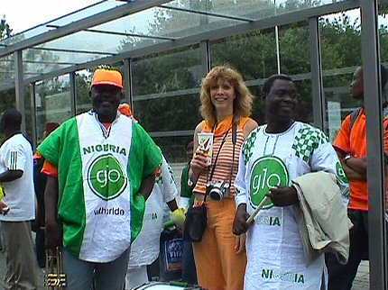

|
Nigeria - Nederland (U20) 1-1 25 juni 2005 |
Nigeria
- Nederland (U20) 1-1 25 juni 2005
Deze supporters hebben al gauw een strategische plaats ingenomen.
Na het spelen van de volksliederen peppen de teams elkaar op.
Voor de
aftrap een misselijkmakend politiek correct ge-bla-bla over discriminatie.
Open deuren intrappen is so boring! Maar de guts om het stenigen van
vrouwen of de moordpartijen tussen christenen en moslims in Nigeria aan
de kaak te stellen, ho maar! Maar goed, dit is een voetbal-site.
Ieder op zijn manier.
De wedstrijd is ruim 20 seconden (!) aan de gang als er een enorme chaos
in de defenstie ontstaat. Nadat Vermeer een inzet weet te keren schiet
Tiendalli de bal van schrik op de paal.
De terugketsende bal wordt dankbaar ingeschoten door Oworie.
Binnen
een minuut is de stand 1-0...!!!
Leuke binnenkomer voor de landgenoten van oud-Rodaspelers zoals
Tijuana
Babangida en Garba Lawal.
Feest in een van de twee Afrikaanse sfeerenclaves. Misschien
hebben ze
een moslim- en een christelijke afdeling.
Er vielen zeven gele kaarten waarvan vijf voor de houthakkers van
Nigeria.
He he, de malloten zitten niet uitsluitend bij oranje....
Een inmiddels befaamd doek op de oost-zijde.
In de rust ontmoeten we Patrick D. de compagnon van Regillio.
Overal waar
het feest is kom je deze gast tegen....
Zoals het een fatsoenlijk mens betaamt sta je in de 46e min. nog
netjes op
je bier te wachten. Dus Vlaar hartelijk dank voor deze snelle gelijkmaker in
de 46e minuut (en Rodaworld ook bedankt
waarvan deze foto is geript).
Nederland kan niet echt doordrukken maar dat geldt ook voor
Nigeria. Het
publiek als 12e man zou het verschil kunnen maken, maar na een 1-1, ook
na de verlenging noopt tot het nemen van strafschoppen.
Bij sommigen daalt de vertrouwensbarometer schrikbarend.
Het V-O-L-L-E stadion was in elk geval prachtig om te zien.
Sfeer was super!
Dit zijn niet de favoriete momenten van de Nederlandse
voetballiefhebber.
Er volgt een bloedstollende strafschoppenserie waaraan geen einde
lijkt
te komen.
Na 24 penalties is Nigeria de halve finalist.... Het neemt niet
weg dat
Nederland U20 een mooi toernooi heeft gespeeld en dat Kerkrade en het
PLS trots terug kunnen kijken op een bijzonder sfeervol evenement. In de
halve finale is het stadion wederom uitverkocht wanneer Nigeria tegen
Marokko speelt.
Postertse maedsjes (U50) in de Kickoff.

Scheel van het bier en de zon schijnt nog steeds. Nou ja feesten
in het
bushok dan maar. Hier zingen we een liedje voor Garba Lawal....
Back home, paar bier, barbecuetje, een ROTFEUER en het
verdriet is
alweer voorbij.